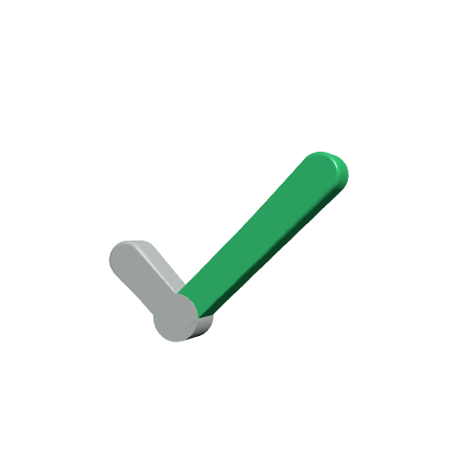

Evals · CI gate · Python
casegate
Runs labelled cases against any LLM system and blocks the pull request that makes it worse.
15 cases · ✗ 2 flipped in the demo pull request

pass 0.973 ± 0.037
tolerance 0.08
tolerance 0.08
Evals · CI gate · Python
Runs labelled cases against any LLM system and blocks the pull request that makes it worse.
15 cases · ✗ 2 flipped in the demo pull request
